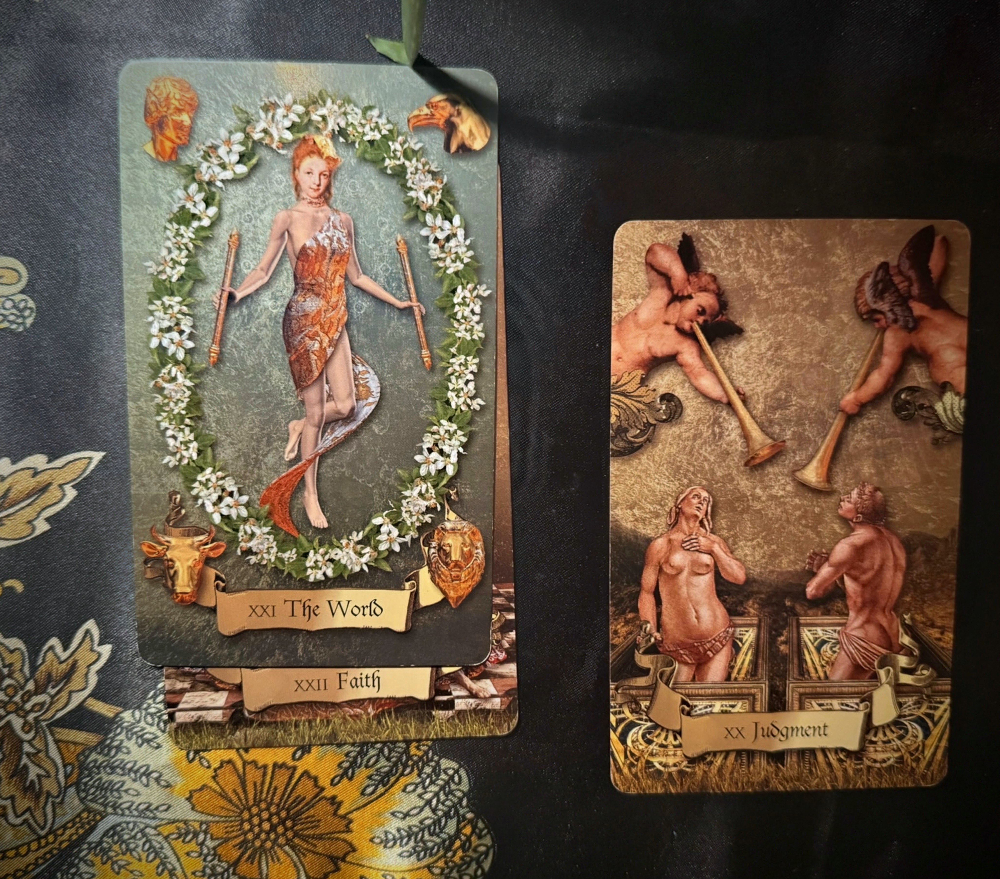
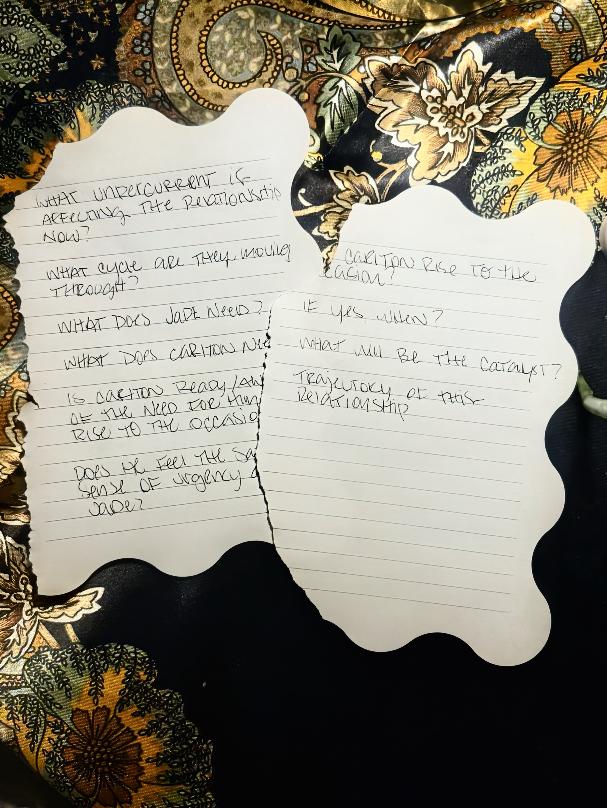
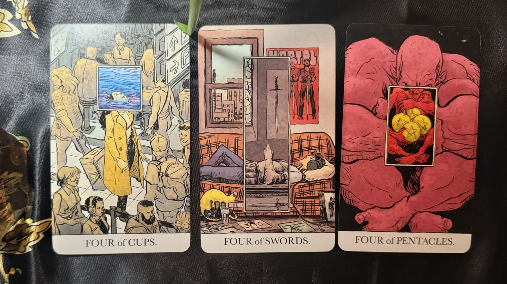
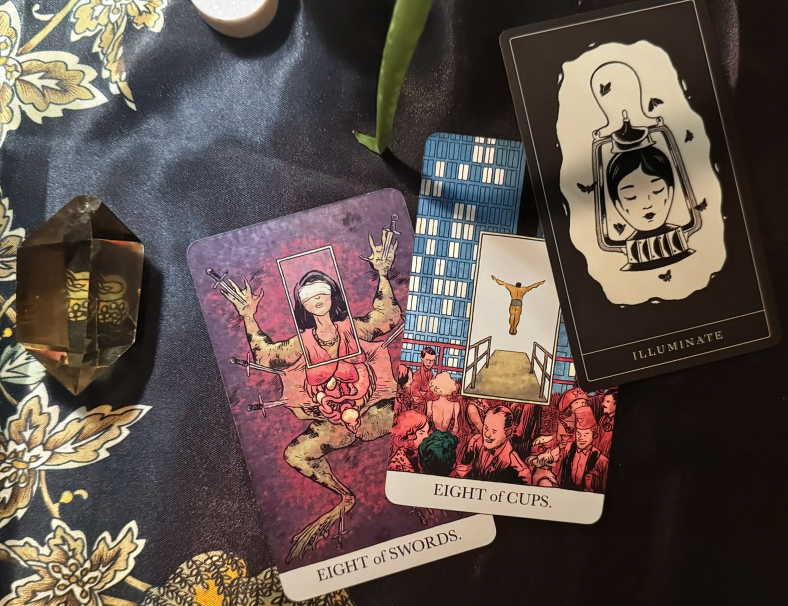

LISTEN HERE
Jade, you came through as The World and Faith (which signifies fidelity). With The World, I sense that you’re ready to embark on a new cycle. It’s as if this one is drawing to a close, and you’re poised to transition into the next phase.
For Carlton, he is Judgment. He could be reminiscing about your relationship or evaluating himself as a partner.

Jade's Cards: The World & Faith | Carl's Card: Judgment
You might need to compromise, reach an agreement, or even just discuss something. I’m The subject involves change, discussion, and reaching a consensus. It doesn’t necessarily have to be a compromise, but rather an agreement on a particular matter.
It's a period of time in which a decision needs to be made, but not all information necessary for making that decision is available.
What Jade Needs: You need clarity, information, answers, to know.
What Carlton Needs: Carl might feel like he’s being excessively scrutinized. It seems like he’s carrying a lot of responsibilities right now and doesn’t want to be the subject of speculation.

The question paper where "will" tore off, leaving "Carlton rises to the occasion"
Carlton wants to do it on his own terms. It’s almost as if he’s saying, “Don’t tell me how to do it.”
Yes. He’s aware of the completion of a cycle and the subsequent transition to the next phase. He can sense it.
He feels pressured, scrutinized, or under constant observation about something. He will comply, but he doesn’t want to because he’s being coerced into doing so.
Fours symbolize stability and security. However, I don’t believe it will have an immediate impact.

The Fours: Stability & Security
The end of August or early September.

The Eights: Timing & Transformation
There will be significant events and turning points between now & August that will give Carl a "light bulb moment."
We have a King of Cups and a Knight of Cups. Cups symbolize emotions, feelings, love, and similar concepts.
1. "This is Okay Too" – This is about relaxing a bit, being less critical, and accepting the present moment without demanding anything.
2. Earth (Upside Down) – Consistent with the first card, it emphasizes the importance of being present and enjoying the moment, rather than dwelling on planning or being overly concerned about being prepared.
3. "Follow This String in the Fog" – You're almost there. You're on the home stretch.
Strong Four Energy: The repeated fours emphasize stability, security, and a foundation being built.
Emotional Alignment: The King and Knight of Cups show you're both in an emotional space & in motion, albeit fluid.
The Torn Paper Sign: "Carlton rises to the occasion" appearing when "will" tore off is a powerful affirmation.
Overall Message: Carlton will rise to the occasion, but he needs to do it in his own way and time. Stay present, release control, and trust you're on the home stretch.